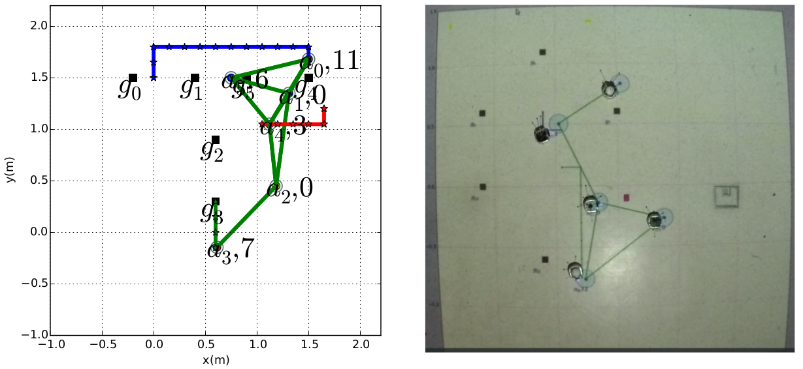

Meng's Software (P_MAS_TG)
P_MAS_TG
Planner for Multi-Agent System under Temporal Goals
Download at GitHub.
Comments and contributions are most welcome!
Description:
this package contains implementation for plan synthesis algorithms given a finite transition system (as the agent motion model) and a Linear temporal logic formula (as the agent task). It outputs the static plan as a sequence of agent motion and action, required to fulfill the task.Features:
Allow both general and co-safe LTL task formulas.
Handle both motion and action models.
Allow soft and hard task specifications.
NetworkX structure for FTS, Buchi and Product automata.
Static or on-the-fly construction of product automaton.
Easy integration with motion control, sensing and communication modules.
Can be used to generate ‘.dat‘ for MatLAB to load Buchi and product automata model. See square_world.py.
Application One
Follow the Example.py
Applied to two agents simultaneously.
Motion and action plan for flexible task specifications.
 |
Application Two
Multiple agents with independent local tasks coexist in a partially-known workspace.
 |
 |
Application Four
Multiple agents with local tasks and relative-motion constraints.
Network connectivity constraint.
Relative-distance constraint with collision avoidance. [Simulation] [Demo]
|  |
Application Five
Multiple agents with contingent service and formation tasks.
Service request as a short-term task provided by one agent to another.
Formation request as the relative deployment requirement with predefined transient response. [Video]
 |
 |